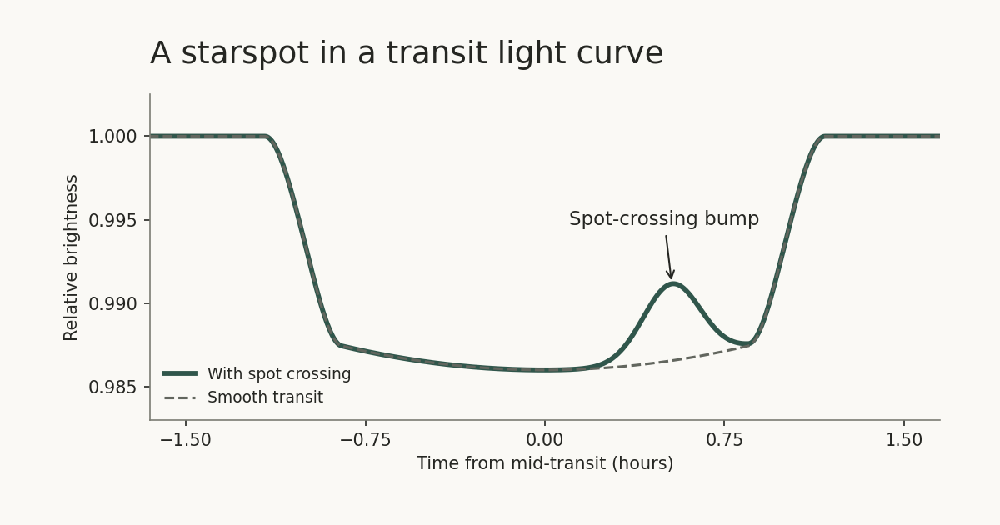

Exoplanets and Scientific Machine Learning
Department of Mechatronics Engineering
İstanbul Health and Technology University
A single starspot shifted the measured midpoint of a transit by up to five minutes in a simulation study I co-authored with Özgür Baştürk and Aysun Akyüz. When a planet crosses a dark spot on its star, it leaves a bump in the dip astronomers use to time the crossing.

Research
I use statistical and computational methods to infer physical properties from noisy measurements. In exoplanet photometry, I study how stellar activity affects transit timing, transit depth, and predictions of future transits. This work connects to mechatronics through signal processing and the validation of models against sensor data.
Projects
- Transit timing on HAT-P-11 b. The 2026 analysis tests how fitting starspot crossings in Kepler light curves can produce apparent timing shifts. The research archive includes the models, scripts, and tests with injected signals.
- Geometric modelling of exoplanet transits. A university funded project I led in 2019–2020. It used Bayesian models to estimate transit parameters and account for stellar activity.
Collaborations
- ExoClock. I contributed to the 2026 catalogue of updated transit predictions for 620 exoplanets, based on ground and space observations.
- Wood species identification. Ongoing · TÜBİTAK 1002 · team member. The project applies deep learning to microscopy images, extending the work on scientific data to image classification.
Publications
First author
- Effects of Spot Occultations on Exoplanet Mid-Transit Timing MeasurementsArif Solmaz, Özgür Baştürk, and Aysun Akyüz · Turkish Journal of Astronomy and Astrophysics · 2023
Selected co-authored research
- ExoClock Project IV. A Homogeneous Catalog of 620 Updated Exoplanet EphemeridesKokori et al. · The Astrophysical Journal Supplement Series · 2026
- Testing the performance of cross-correlation techniques to search for molecular features in JWST NIRSpec G395H observations of transiting exoplanetsEsparza-Borges et al. · Monthly Notices of the Royal Astronomical Society · 2025
- A high geometric albedo and small size for the Haumea cluster member (24835) 1995 SM55 determined from a stellar occultation and photometric observationsOrtiz et al. · Astronomy & Astrophysics · 2025
Co-authored preprints and white papers
- Early Exploration of the Scientific Discovery Space for the Habitable Worlds ObservatoryDressing et al. · arXiv preprint · 2026
- The role of the Hubble Space Telescope in advancing our understanding of atmospheric escape in exoplanetsDos Santos et al. · arXiv white paper · 2026
Student projects
I’m open to student research project enquiries for Spring 2027.
2027 bahar döneminde bir araştırma projesi yapmak isteyen öğrenciler bana e-posta yazabilir.
İSTÜN undergraduates and MSc students can email me to discuss a project. Possible starting points include fitting a public transit light curve or testing how a simulated starspot affects its measured timing. Basic Python and an interest in plotting and interpreting data are useful.
Undergraduates can also get in touch to discuss ideas for TÜBİTAK 2209-A.
Contact
Arif Solmaz, PhD · Assistant Professor
arif.solmaz@istun.edu.tr · ORCID · GitHub
For a project enquiry, include your programme and year, what you’d like to investigate, any Python or data analysis experience, and when you’d like to start.
İSTÜN lisans ve yüksek lisans öğrencileri, araştırma projeleri hakkında bana e-posta yazabilir. Bölümünüzü, sınıfınızı, araştırmak istediğiniz konuyu ve varsa Python veya veri analizi deneyiminizi kısaca belirtin. Lisans öğrencileri TÜBİTAK 2209-A proje fikirleri için de yazabilir.
Acknowledgments
TÜBİTAK supported the WASP-52 observations through T100 observing programme 19AT100-1471. Co-author Özgür Baştürk acknowledged TÜBİTAK 1001 grant 118F042. Çağ University supported my participation in the 22nd National Astronomy Congress.